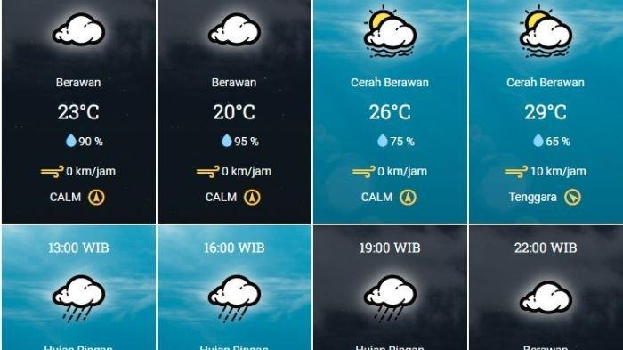
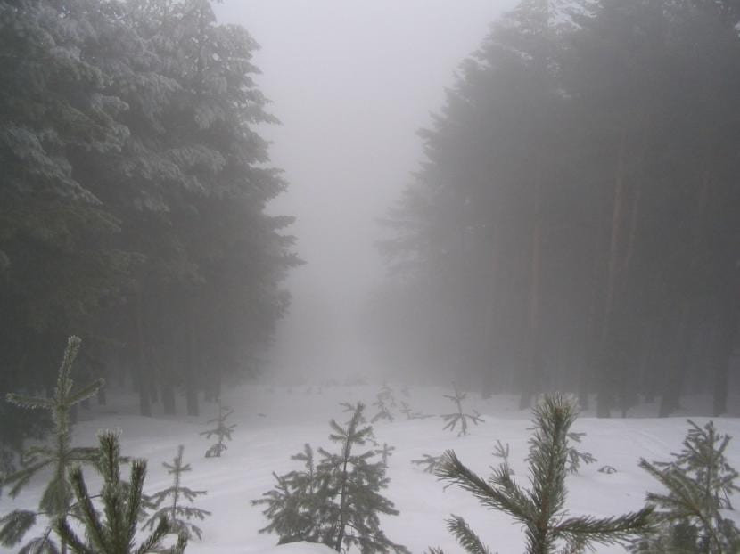
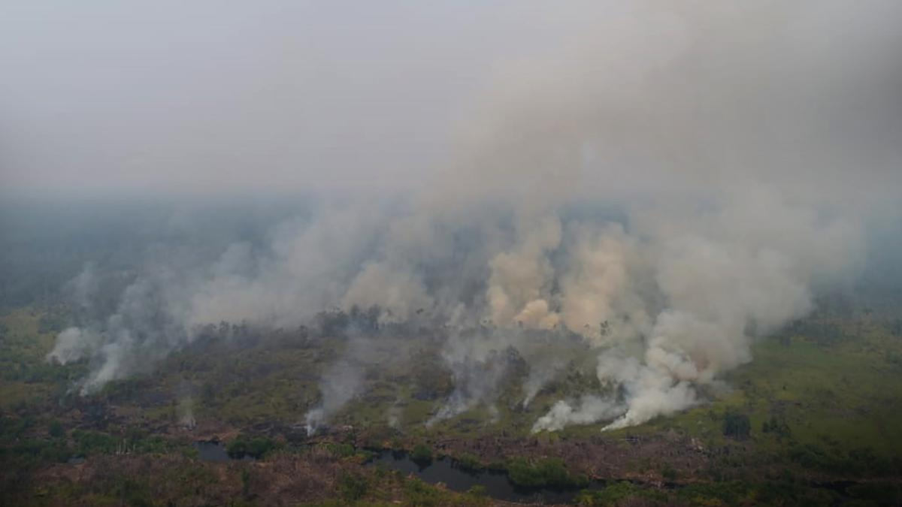
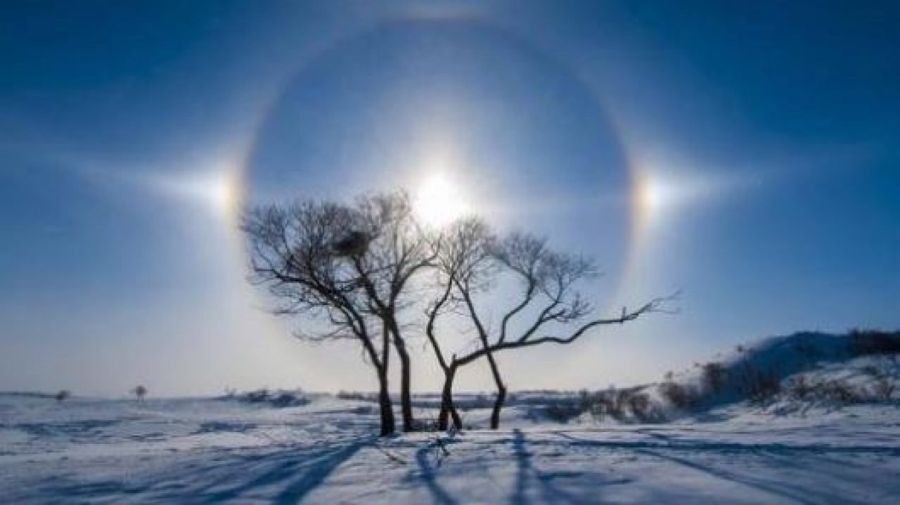
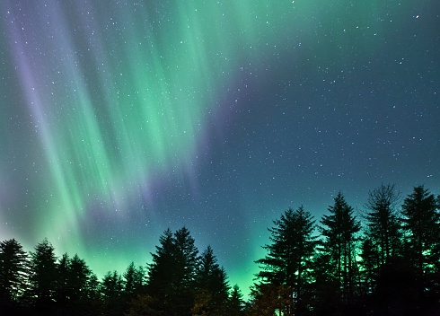

Prakiraan Cuaca
Prakiraan Cuaca merupakan bentuk penerapan dari sains dan teknologi untuk memprediksi kondisi atmosfer pada waktu dan lokasi tertentu. Manusia mulai memprediksi cuaca secara informal mulai tahun 650 sebelum masehi ketika bangsa Babilonia menggunakan fenomena-fenomena alam untuk memprediksi perubahan cuaca jangka pendek di masa depan.

Hidrometeor
Hidrometeor adalah fenomena selain awan yang timbul karena keberadaan unsur air. Bentuk hidrometeor yaitu embun, kabut,hujan dan salju.

Litometeor
Litometeor merupakan fenomena yang timbul akibat adanya butir-butir kecil dari benda yang tidak mengandung air. Bentuk umum dari litometeor adalah debu dan asap.

Fotometeor
Fotometeor merupakan fenomena optik yang berkaitan dengan pemebiasan, pemantulan,penguraian, dan interfensi sinar matahari atau cahaya bulan. Pembentukan fotometeor terjadi selama cahaya melewati atmosfer. Fotometeor di atmosfer dapat berbentuk halo pada matahari atau bulan, pelangi, busur kabut dan cincin Bishop. Pembentukan fotometeor dipengaruhi oleh kondisi uadara yang berlapis-lapis.

Elektrometeor
Elektrometeor merupakan fenomena kelistrikan yang berkaitan dengan kadar muatan listrik listrik di dalam udara. Umumnya, elektrometeor muncul dalam wujud kilat, badai petir, atau aurora.
Cuaca
Cuaca adalah keadaan udara di atmosfer pada waktu dan tempat tertentu yang sifatnya tidak menentu dan berubah-ubah. Penilaian terhadap kategori cuaca umunya dinyatakan dengan memperhatikan kondisi hujan, suhu udara, jumlah tutupan awan,penguapan,kelembapan,dan kecepatan angin di suatu tempat dari hari ke hari.